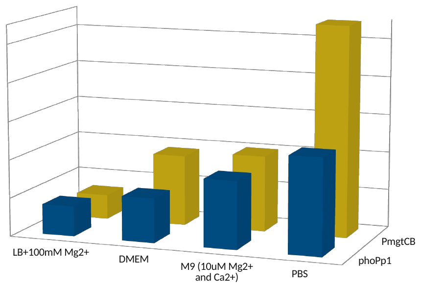
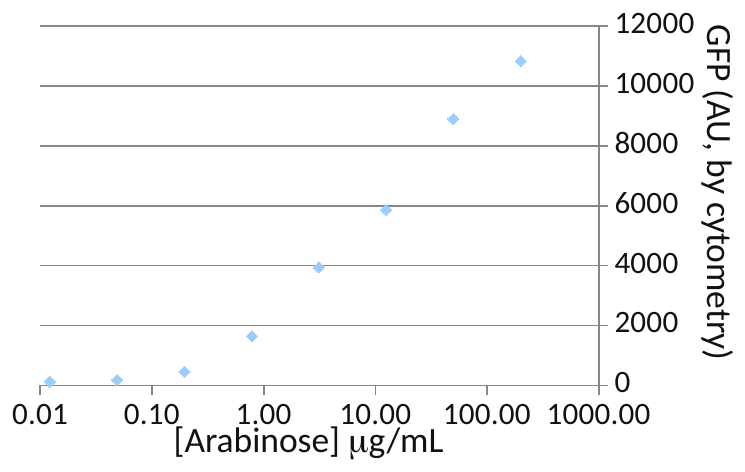
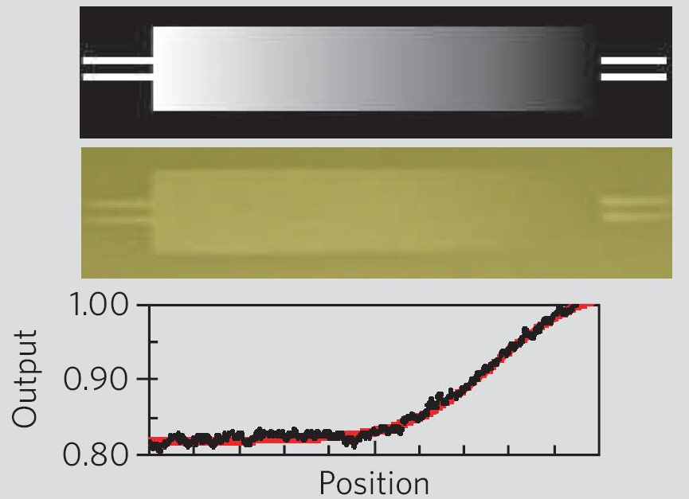

Thus far we’ve focused on describing different ways of extracting information about the function of a genetic device in a cell. There are additional considerations such as the choice of controls and choice of experimental conditions that must be including in the Test phase. We’ll describe 4 specific areas of information one needs to extract from an assay. In differential expression, you are comparing a strain’s function under two or more environmental conditions. In a transfer function, you are continuously varying some environmental parameter and trying to produce a function relating the output behavior to this input. Dynamics involves following the system over time with your assay. Finally, population heterogeneity involves performing your assay on individual members of the cell population.
Section divider: Experimental Design. Four topics are listed: differential expression, transfer functions, dynamics, and population heterogeneity.
Differential Expression
Example: a magnesium promoter part in LB versus PBS
Differential expression implies there are 2 (or more) conditions, and you want to know whether a device behaves differently under those different conditions
Red Fluorescence Measured by Fluorimetry in Different Media

Differential expression involves performing an assay undeer different conditions. In this example, we are trying to characterize the response behavior of a magnesium-responsive promoter in LB medium versus PBS medium.
Differential expression, with the example of a magnesium promoter part in LB versus PBS. Differential expression implies there are two or more conditions, and you want to know whether a device behaves differently under them.
Transfer Functions
Example: arabinose promoter
Like differential expression, transfer functions are a relationship between an input and a measured response
The difference is, the stimulus is graded, so you have a function relating the two
PMID: 17700541


PMID: 16306980
A transfer function experiment involves scanning through a continuous environmental variable. In the previous example of the magnesium-responsive promoter, we could grow the cells in LB medium with many different concentrations of magnesium and then plot red fluorescence over time.
Transfer functions, with the example of the arabinose promoter. Like differential expression, a transfer function is a relationship between an input and a measured response; the difference is that the stimulus is graded, so there is a function relating the two.
I’ll show you these two clips after this presentation, but these are two examples of following the dynamics of single cells containing a genetic circuit over time. These oscillating genetic circuits require monitoring the behavior of individual cells over time. Currently, the only way to do this is fluorescence microsopy and thus such assays only work for fluorescence readouts. It would be extremely challenging to, for example, monitor single-cell dynamics of a cell biosynthesizing a biofuel.
Dynamics. Two video stills of genetic circuits followed over time in single cells, each with its YouTube link: a microcolony of bacteria with some cells glowing green, and a population of cells glowing blue.
Population Heterogeneity/ Phase Variation
iGEM: Peking, 2007
Another measured property of a strain is population heterogeneity. Here, one cell in the population does something different than other cells. Sometimes this is an intentional property. For example, this variant of the toggle switch from the Peking igem team in 2007 is designed to cause population heterogeneity. Thus, they need to look at individual cells in the population and measure two different channels of fluorescence. However, often population heterogeneity is an unwanted and challenging-to-measure property of a strain. For example, you might have a biosynthetic pathway in a cell in which only 10% of the population is producing the genes needed for biosynthesis. With bulk measurements, it is impossible to know that such heterogeneity exists, but it is challenging to decipher this quality of your design directly. If the heterogeneity is due to genetic mutation, this can be pulled out from single-cell sequencing. There are efforts to develop other single-cell assays in the works, but as of 2014, sequencing and fluorescence are the only off-the-shelf way to ask questions about population heterogeneity.
Population heterogeneity, or phase variation. A toggle-switch circuit from the Peking 2007 iGEM team, built from cI and cI434 with an EGFP reporter, above two fluorescence images of colonies: a field of mostly green colonies with a few red, and a close-up of one colony red at its centre and green around it.